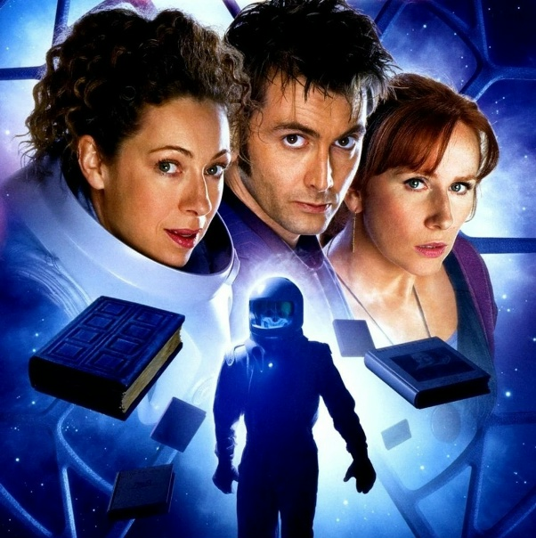

Эра Десятого Доктора (4 сезон)
<<< НАЗАД ||| 8. Тишина в библиотеке ||| ДАЛЬШЕ >>>
MVO [TVShows] 2.0 + 5.1, MVO [Кириллица], MVO [Канал Sci-Fi], MVO [Baibako], DVO [Канал НТС], VO [rz]
+ Original [ENG]
Субтитры: Русские {TrueTransLate} и Английские
 Оригинальная версия | Все серии сезона в одном видео * без приквелов, мини-эпизодов и спецвыпусков |
Silence in the Library
Дата выхода: 31 мая 2008
Формат: 45-минутный эпизод
| Варианты озвучек: | * Разные: смотрите по инструкции |
|---|---|
| Скачивание и просмотр: |
Десятый Доктор и Донна Ноубл отправляются в библиотеку размером с планету в 51 век. Там они обнаруживают, что гуманоидов на планете нет, но присутствуют мириады форм жизни. Информационный стенд советует им "считать тени". На планету прибывает археологическая экспедиция, возглавляемая таинственной профессор Ривер Сонг, которая привозит с собой последнее сообщение, полученное из Библиотеки накануне: "4022 сохранены, выживших нет."


Трейлер: